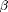
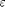
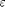

fit_OLS
Multivariate linear regression.
Contents
Usage
[beta_OLS Sigma_OLS]=fit_OLS(X,Y)
Input
- X: Predictors, an n by p matrix, p is the number of predictors. The predictors can be univariate or multivariate, discrete or continuous.
- Y: Multivariate responses, an n by r matrix, r is the number of responses and n is number of observations. The responses must be continuous variables.
Output
- beta_OLS: An r by p matrix containing estimate of the regression coefficients .
- Sigma_OLS: An r by r matrix containing estimate of the error covariance matrix.
Description
In a multivariate linear model, Y and X follows the following relationship:  , where  contains the errors. This function performs the ordinary least squares fit to the inputs, and returns the estimates of and the covariance matrix of .
, where  contains the errors. This function performs the ordinary least squares fit to the inputs, and returns the estimates of and the covariance matrix of .
function [beta_OLS Sigma_OLS]=fit_OLS(X,Y)
n=length(X);
XC=center(X);
YC=center(Y);
PX=XC*inv(XC'*XC)*XC';
beta_OLS=YC'*XC*inv(XC'*XC);
Sigma_OLS=YC'*(eye(n)-PX)*YC/n;